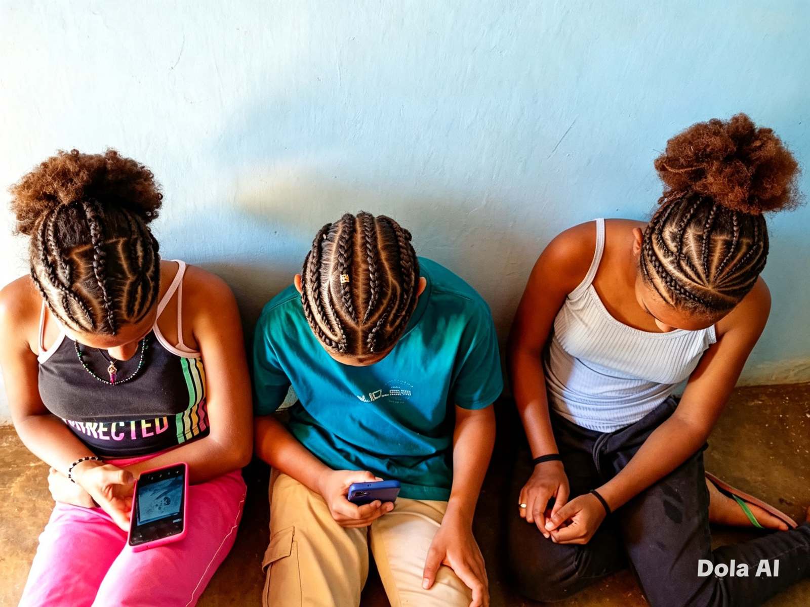
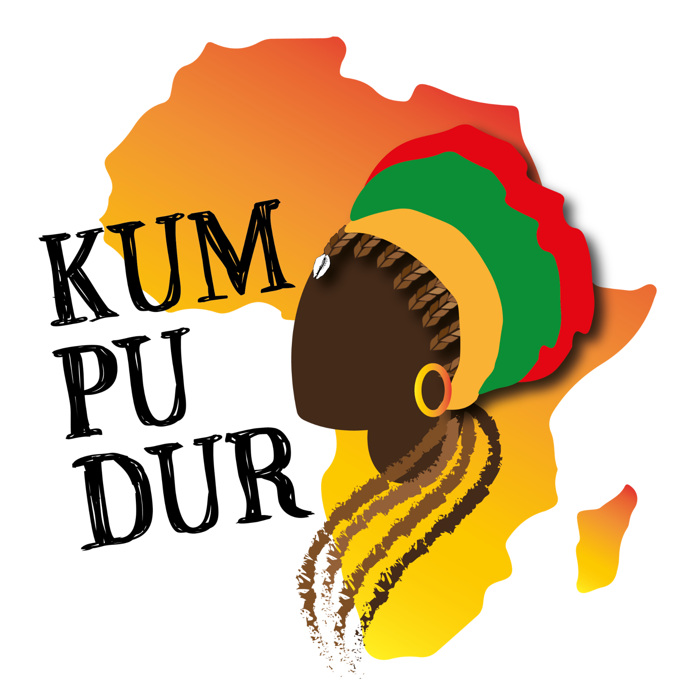
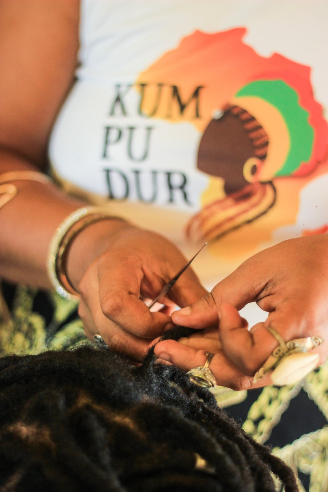
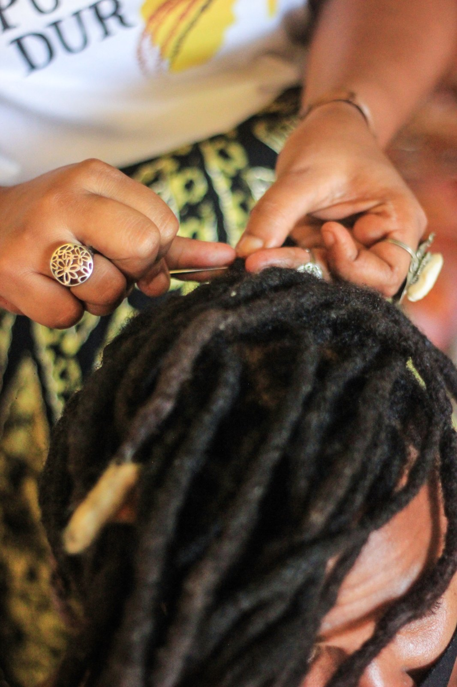
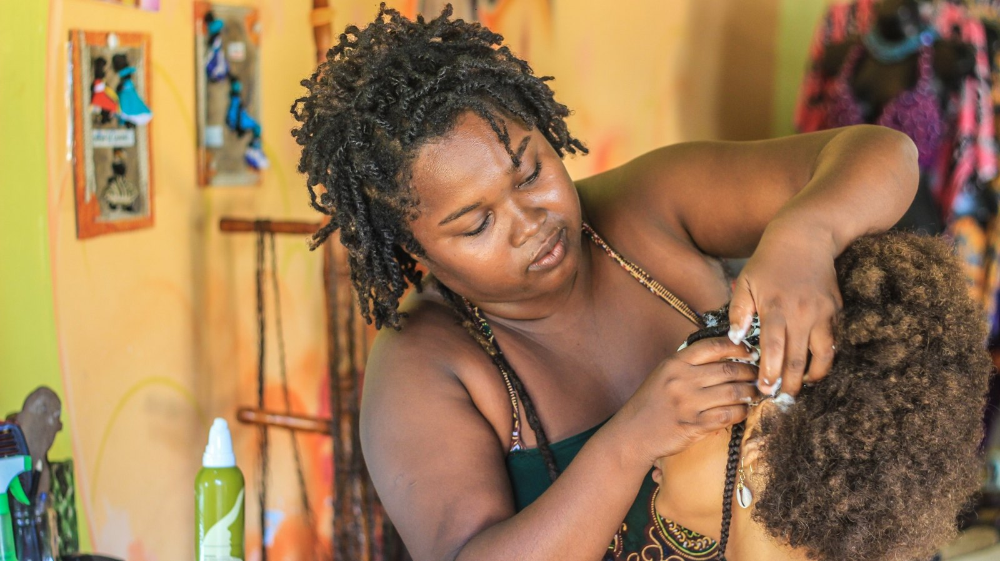
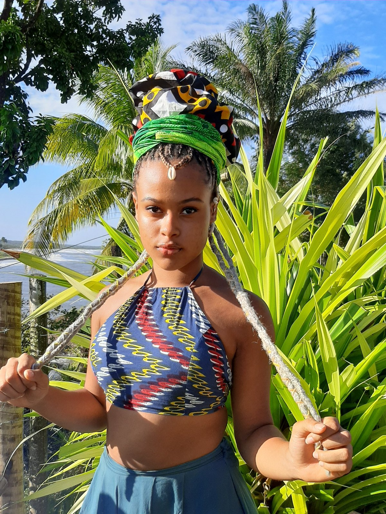
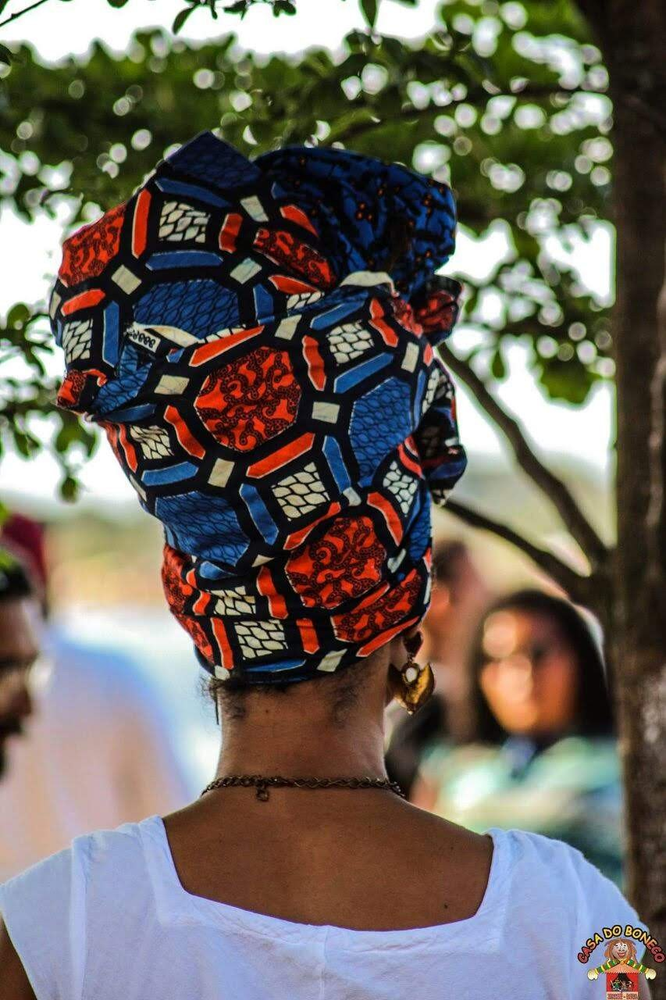
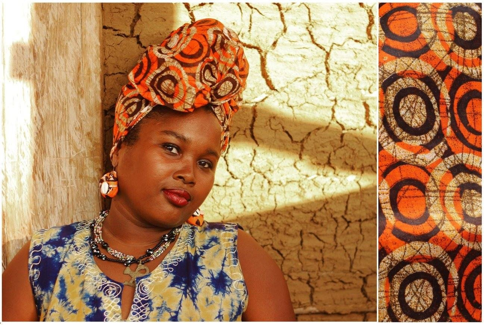

01Tranças e penteados afro
Tranças e penteados que expressam identidade, beleza e ancestralidade.
Consultar orçamento ↗
KUMPUDURITACARÉ · BAHIAITACARÉ, BAHIA · DESDE 2020
Um espaço de acolhimento, autocuidado e resistência preta, que fortalece a autoestima através de tranças, dreads, penteados afro e cuidados com cabelos crespos e cacheados.
Atendimento mediante agendamento prévio

Kumpudur é uma palavra do Kriolo guineense que, entre seus significados mais utilizados, remete a quem constrói algo, à trançadeira de cabelo e à costureira.
Criado em 2020, a partir de um mapa de marca desenvolvido pela Owó Consultoria, o Kumpudur nasce da união dos trabalhos de duas profissionais com mais de dez anos de experiência: Dani Jêje e Preta Ashanti.
Em Itacaré, o espaço reúne beleza, saberes tradicionais, criação artística e fortalecimento da identidade negra. Cada atendimento é também um encontro de histórias, cuidado e pertencimento.
Conheça quem constrói esse espaço ↗Tradição, técnica e expressão em serviços pensados para valorizar a beleza negra. Orçamentos são realizados individualmente.

01Tranças e penteados que expressam identidade, beleza e ancestralidade.
Consultar orçamento ↗
02Produção de dreads, manutenção e acompanhamento dos cuidados.
Consultar orçamento ↗
03
04Produtos e acessórios para cabelo afro, cuidado e expressão pessoal.
Consultar disponibilidade ↗
05Oficinas de turbante, oficinas e cursos profissionalizantes.
Consultar oficinas ↗
06Atividades culturais, eventos e compartilhamento de saberes.
Propor parceria ↗“Nosso trabalho vai além da estética. É sobre reconhecer, cuidar e celebrar aquilo que somos.”
KUMPUDUR · AUTOCUIDADO E RESISTÊNCIA PRETADuas trajetórias dedicadas à cultura, à arte e ao fortalecimento da identidade negra.

Mulher preta quilombola, trancista, costureira, dançarina, coreógrafa, arte-educadora e graduanda em Relações Internacionais pela UNILAB, Campus dos Malês. Atua como produtora e gestora cultural da Casa do Boneco de Itacaré desde 2002.

Mulher preta, mãe de Orunmilá e Aiyê Bomani, dreadmaker, artesã, turbanteira e dançarina. Proprietária da linha de produção Odun Abayomi, atua como produtora e gestora cultural da Casa do Boneco de Itacaré desde 2004.
Um pouco dos penteados, processos e expressões que fazem parte do universo Kumpudur.


Atendemos em Itacaré (BA), mediante agendamento prévio. Escolha o serviço e conte o que procura. Vamos preparar sua mensagem para o WhatsApp.
LOCALIZAÇÃO Itacaré · Bahia
WHATSAPP — DANI JÊJE (73) 98879-1015 ↗
WHATSAPP — PRETA ASHANTI (73) 8173-6832 ↗
INSTAGRAM @kumpudur ↗
E-MAIL kumpudurdikabelo@gmail.com ↗